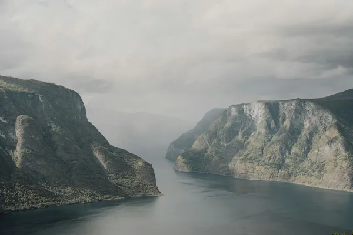

Norway: Aquavit (akevitt)

Photo: Alexandre St-Aubin on Unsplash
Norwegian aquavit is the Scandinavian classic for festive meals, and it is usually aged in oak.
How it's made
Must be flavoured mainly with caraway or dill. Linie Aquavit is shipped across the equator and back in casks before bottling.
A neutral spirit, in Norway usually from potatoes, is flavoured with caraway and often dill, fennel, aniseed, citrus peel or other spices, then redistilled or blended. Caraway or dill must lead the flavour.
History
Aquavit (akevitt) has been made in Norway since at least the 1500s and is the traditional drink at Christmas and on 17 May, Norway's national day. Linie began in the early 1800s when casks of aquavit sent to the East Indies came back unsold and tasted better for the voyage.
Ageing and label terms
Unlike most Scandinavian aquavits, Norwegian ones are usually aged in oak, often in sherry casks, which gives them a golden colour. Linie aquavit crosses the equator twice in sherry casks on a ship before bottling; the back label lists the ship and route.
Styles
Golden, cask-aged aquavits with caraway and oak spice are the main Norwegian style. Clear, unaged versions exist, as do longer-aged premium bottlings.
Rules and protected names
EU rules require aquavit to be flavoured with caraway and/or dill and to be at least 37.5% ABV. 'Norsk Akevitt' is a protected geographical indication and must be made from Norwegian potatoes.
How to serve and classic cocktails
Traditionally drunk chilled or at cellar temperature in small glasses as a toast, often with beer alongside. It also works in cocktails in place of gin, such as an aquavit Martini or Negroni.
With food
Classic with herring, smoked salmon, lutefisk, pinnekjøtt (salted lamb ribs) and other rich Christmas dishes; caraway helps with fatty foods.
Good to know
Skål! Norwegians often serve aged aquavit at room temperature rather than ice cold, so the cask flavours show.
Producers
- Linie
- Løiten
- Gilde
Bottles to try
Linie Aquavit
Caraway, dill, star anise, citrus peel and sherry wood.
Strength: 41.5% · Age and cask: Aged in ex-oloroso sherry casks, including about four months at sea
Each batch sails around the world in sherry casks on a ship, crossing the equator (the 'linie') twice. The rocking, changing temperatures and sea air are said to speed up and round out the ageing.
Serve: Cold, in a small glass, with festive food
Gilde Non Plus Ultra
Caraway and dill with dried fruit, vanilla and soft sherry-cask spice.
Age and cask: Oak-aged in sherry casks
A long-established, cask-aged Norwegian aquavit made by Arcus, part of the brown, wood-matured style that sets Norway apart from clearer Swedish and Danish aquavits.
Serve: Lightly chilled, neat, alongside cured meats or Christmas ribbe
Gammel Opland Aquavit
Caraway and dill over sherry-cask dried fruit and spice.
Strength: 41.5% · Age and cask: Aged in oak casks that held sherry
A traditional Norwegian potato aquavit, now made by Arcus near Oslo. Its long cask ageing gives it more colour and roundness than most Scandinavian aquavits.
Serve: Chilled in a small glass with Christmas pinnekjøtt or herring
More anise & others regions
Explore all spirits in the interactive guide
The Wine Reference newsletter
New wines, stories and career guides, one email a week at most.
Over 18s only. Unsubscribe any time with one click. Your email is stored securely by Kit and never shared.
Support The Wine Reference
This guide is free, with no paywall. If it helped you choose a bottle, you can buy me a glass and keep it growing.
🍷 Buy me a glass